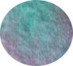

Főzelék - Gondoltam csinálok egy alkalmazást Dzsodzsó paradoxonjának kutatására...
A híres dzso paradoxon kimondja, hogy a magyarban van egy szó, ami önmagában hordozza tulajdonságának ellentettjét. Kérdésként kiejtve értelmes, és csakis "nem"-et kaphatunk válaszul!